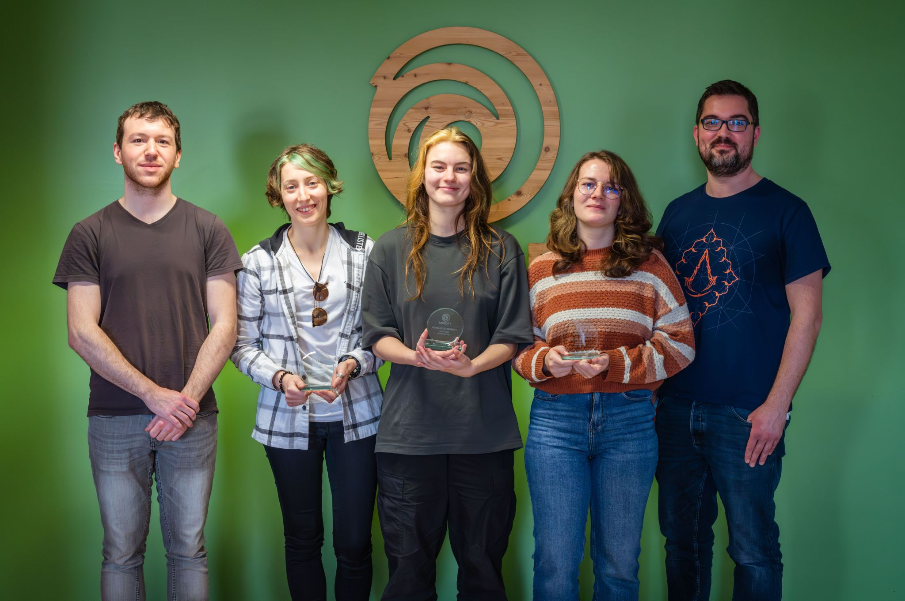
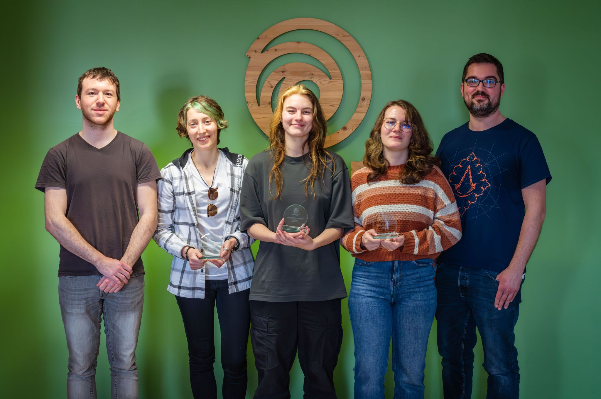

At the end of 2023, I had the chance to participate in the Develop At Ubisoft Program.
For this project we had no engine, just a library (NextAPI) given by Ubisoft that allowed us to display sprites, read inputs and play sounds in a window. This was a solo project done in a few months, only working in the evening and the weekend (all sounds and music are done by Mael Heurard though, big thanks to him).
Your goal as the player is to secure most of the map to avoid slime spawn and free the caves. I wanted to convey the same feeling that I had playing Minecraft, a sense of safeness linked to the light.
I had only used C++ on a few really small projects before, so this was a huge first for me. The fact that we had no engine and everything was done in the code was also really interesting and made this game a big learning experience.
 

Rolling Food Chain has ranked 184 out of 7000+ for the #GMTK2024 jam with @hookariagames and @NamedZak. Got 60 ratings and 39 comments, thanks a lot to everyone that played the game :)
— Alvina (@alvina_dr_) August 28, 2024
This was a good summer ☀️ pic.twitter.com/VFNimMBHno